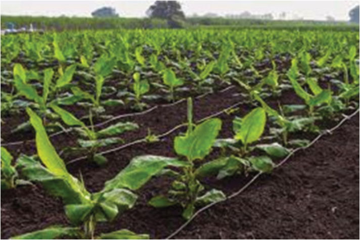

Soil water management
Banana plants require a minimum of 1,000 mm of rainfall per year. Therefore, at
all times of plant growth, soil water management should aim at maintaining soil
water content at an optimal state for banana plant growth and productivity. If the
annual rainfall is less than 1,000 mm, the provision of water becomes necessary,
especially during the flowering stage. Similarly, excess soil water is not good for
the plant and hence has to be drained off. In drier seasons, supplemental water
is even crucial. This can be done through various means of irrigation including
flooding and drip irrigation (Figure 2.3). Cultural practices such as the use of
mulches around banana plants, and applying organic matter minimises the needs
for irrigation.
Figure 2.3: Drip irrigation system in a banana field
Activity 2.4
1. Adopt a suitable soil water management system and apply it to the planted
banana suckers (refer to Activity 2.3);
2. Explain the advantages and limitations of the system; then,
3. Make a summary.